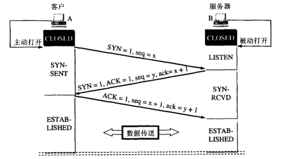
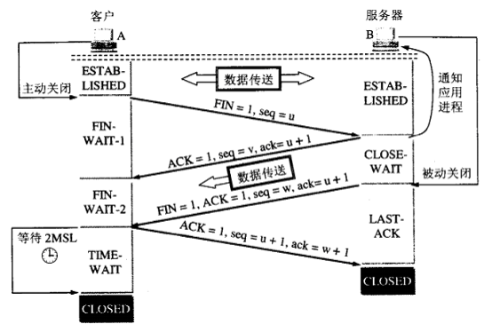

三次握手

第一次握手：建立连接时发送SYN会选择一个初始序号（ISN），每个连接的ISN都是不同的。客户端发送数据包(SYN=1，seq=x)到服务器，并进入SYN_SEND状态，等待服务器确认；
第二次握手：服务器收到数据包包，必须确认客户的SYN（ACK=1，ack=x+1），同时自己也发送一个SYN包（SYN=1，seq=y），即SYN+ACK包，此时服务器进入SYN_RECV状态；
第三次握手：客户端收到服务器的SYN＋ACK包，向服务器发送确认包ACK=1(ack=y+1)，此包发送完毕，客户端和服务器进入ESTABLISHED状态，完成三次握手。
握手过程中传送的包里不包含数据，三次握手完毕后，客户端与服务器才正式开始传送数据。理想状态下，TCP连接一旦建立，在通信双方中的任何一方主动关闭连接之前，TCP 连接都将被一直保持下去
四次挥手

第一次挥手：主动断开连接一方向被动断开连接发送FIN数据包，FIN=1,seq=x，告诉被动断开连接一方“我要跟你断开连接了，我不会再给你发送数据了”，这是主动断开连接方式可以接受数据的，如果一直没有收到被动连接方的确认包，则可以重新发送这个包。此时，主动断开连接方处于FIN_WAIT_1状态
第二次挥手：被动连接方接收到FIN包以后，发送确认包ACK=1,ack=x+1（FIN和SYN一样占用一个序列号），这个动作是告诉主动断开连接方我知道你要断开了，但是我还有数据没有发送完，等发送完了所有的数据就进行第三次挥手，此时被动断开连接方处于CLOSE_WAIT状态，主动断开连接方处于FIN_WAIT_2状态
第三次挥手：被动断开连接方发送FIN=1，seq=y+1包，用来停止向主动断开连接方发送数据，也就是告诉主动断开连接方，我的数据也发完了，我也不给你发数据了，此时被动断开连接方处于LAST_ACK状态，主动断开连接方处于TIME_WAIT 状态
第四次挥手：等过了一定时间（2MSL（报文段最大生存时间）:为了保证最后ACK报文能够到达B，防止已失效连接请求报文段出现在此连接中）过后，主动断开连接方发送确认包ACK=1, ack=y+2，至此，四次挥手已经完成。
TCP的三次握手过程？为什么会采用三次握手，若采用二次握手可以吗？
答：建立连接的过程是利用客户服务器模式，假设主机A为客户端，主机B为服务器端。
（1）TCP的三次握手过程：主机A向B发送连接请求；主机B对收到的主机A的报文段进行确认；主机A再次对主机B的确认进行确认。
（2）采用三次握手是为了防止失效的连接请求报文段突然又传送到主机B，因而产生错误。失效的连接请求报文段是指：主机A发出的连接请求没有收到主机B的确认，于是经过一段时间后，主机A又重新向主机B发送连接请求，且建立成功，顺序完成数据传输。考虑这样一种特殊情况，主机A第一次发送的连接请求并没有丢失，而是因为网络节点导致延迟达到主机B，主机B以为是主机A又发起的新连接，于是主机B同意连接，并向主机A发回确认，但是此时主机A根本不会理会，主机B就一直在等待主机A发送数据，导致主机B的资源浪费。
（3）采用两次握手不行，原因就是上面说的实效的连接请求的特殊情况。
TIME_WAIT状态存在的理由
1）可靠地实现TCP全双工连接的终止
在进行关闭连接四路握手协议时，最后的ACK是由主动关闭端发出的，如果这个最终的ACK丢失，服务器将重发最终的FIN，因此客户端必须维护状态信息允 许它重发最终的ACK。如果不维持这个状态信息，那么客户端将响应RST分节，服务器将此分节解释成一个错误（在java中会抛出connection reset的SocketException)。因而，要实现TCP全双工连接的正常终止，必须处理终止序列四个分节中任何一个分节的丢失情况，主动关闭 的客户端必须维持状态信息进入TIME_WAIT状态。
2）允许老的重复分节在网络中消逝
TCP分节可能由于路由器异常而“迷途”，在迷途期间，TCP发送端可能因确认超时而重发这个分节，迷途的分节在路由器修复后也会被送到最终目的地，这个 原来的迷途分节就称为lost duplicate。在关闭一个TCP连接后，马上又重新建立起一个相同的IP地址和端口之间的TCP连接，后一个连接被称为前一个连接的化身 （incarnation)，那么有可能出现这种情况，前一个连接的迷途重复分组在前一个连接终止后出现，从而被误解成从属于新的化身。为了避免这个情 况，TCP不允许处于TIME_WAIT状态的连接启动一个新的化身，因为TIME_WAIT状态持续2MSL，就可以保证当成功建立一个TCP连接的时 候，来自连接先前化身的重复分组已经在网络中消逝。